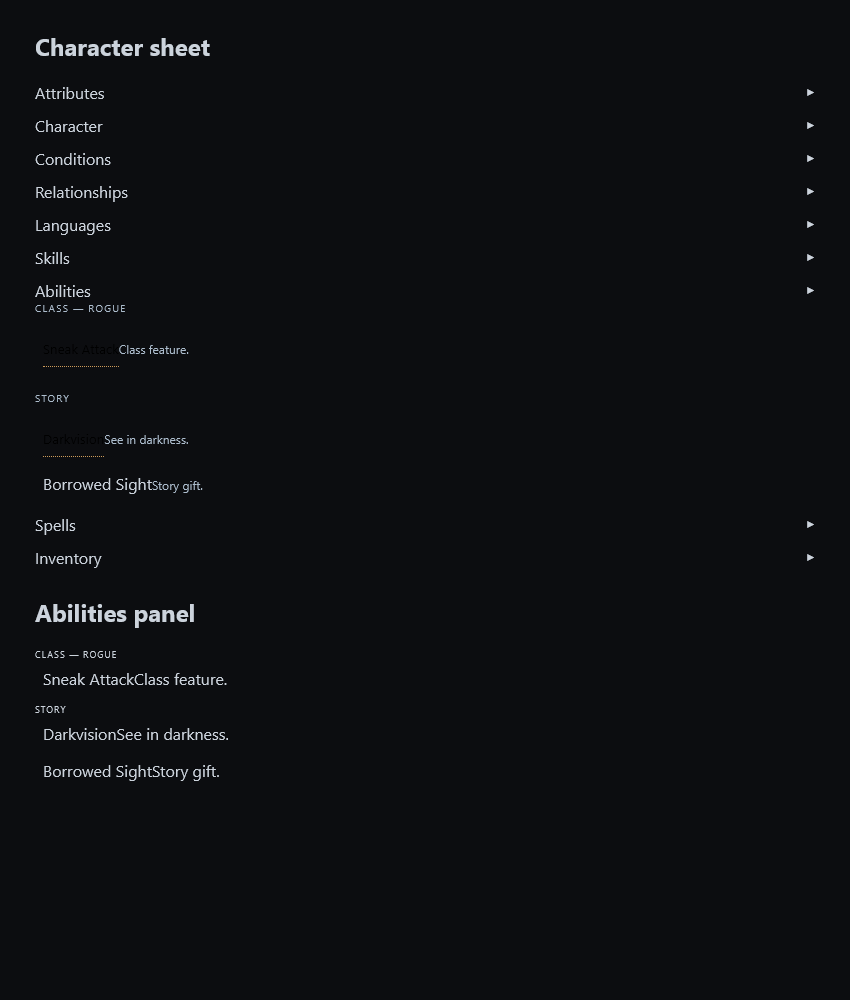
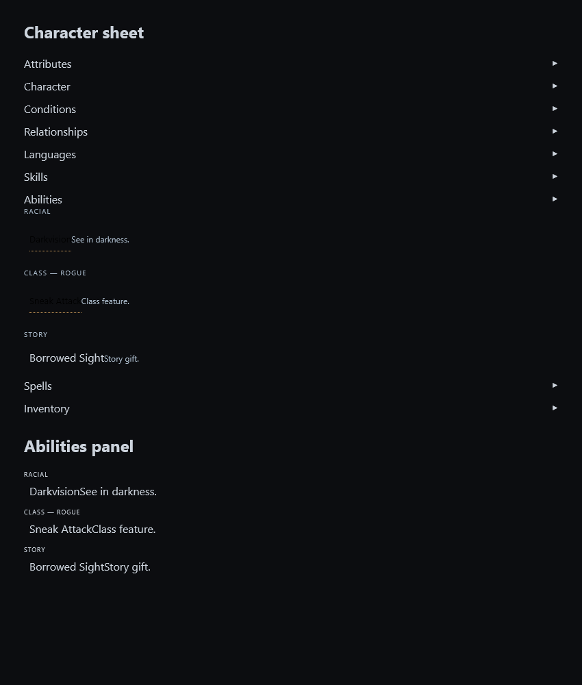

Scope: complete known issues that do not change the drift surface or require owner input. Reviewed all 29 current known-issue rows for scope; this is not a claim to have reproduced every deferred issue or individually adjudicated all 28 leads under #527.
Mandatory full gate: ALL GREEN, 2,647 engine assertions and 101 standalone verifier suites. Protected runtime files have no diff from baseline 066cba62. Cloudflare serves v1.1161; downloaded globals.js, helpers.js and sw.js match the tested checkout, and the deployed helper classifies the reported racial ability correctly. An initial extra deployment probe reversed the helper arguments and failed; the corrected probe passes. Production OAuth login/campaign loading, audible voice checks and deferred owner play tests were not performed.
Rendered fixture evidence below uses the real character sheet and ability-panel renderers. It demonstrates grouping, not a full authenticated player session.


| TODO | Issue | Disposition |
|---|---|---|
| 504 | Same-sex relatives under a bare title still merge: "Queen Underbough" lands on "Wilhelmina Underbough" when her record states no rank (the residue of #503; needs a ruling). | Deferred: identity merge semantics need an owner ruling and protected parser/memory work. |
| 517 | The counter's arithmetic: a sale bundled with a purchase gives the sold items away, and several coin and count shapes pay the wrong amount (Thursday review 2026-10-01). | Deferred: remaining coin/item transactions span the protected parser and require coordinated economic changes. |
| 518 | Item moves with a count, and gifts at home, move the wrong number of units (Thursday review 2026-10-01; #481 A2, D1, D2). | Deferred: cross-prose item pairing is a protected parser defect; no presentation workaround. |
| 519 | The spoken undo can destroy an item: after a hero swap the stowed spear is in nobody's pack, and the undo says it worked (Thursday review 2026-10-01; #481 D1). | Closed: current hero-swap and row-only undo regression cases pass; #597 supplied the remaining fix. |
| 523 | Census housekeeping: the storage-key convention line is false and most keys are undocumented, and the server's /health does not say its version (Thursday review 2026-10-01). | Closed: storage census already shipped; public server health version implemented and deployed as 1.7.3. |
| 525 | The Princess's ending was written in the hero's first person with game words ("level one", "nineteen levels", "the narrator") and modern idiom (needs a ruling; Thursday read). | Deferred: ending prose rules require owner input and prompt changes. |
| 527 | Review leads: smaller defects the 2026-10-01 reviewers reproduced on a clean copy of master; each needs a hand check before it becomes its own row. | Partial: lead 25 fixed in the shared ability presentation. Other leads remain open; parser/prompt/state work and the Cleric duplicate ruling are outside this sweep. |
| 528 | Proof gaps: behaviour the week's commit messages state that no test pins (Thursday review 2026-10-01). | Partial: portrait ingress and stale scene Portrait action now have caller tests and named mutation proof. Other proof gaps remain open. |
| 530 | The "different person" answer to a name-collision note never lands while scene refs are active (latent; found building #504). | Deferred: scene-reference identity resolution is protected. |
| 531 | A death that names a relative by title lands on the person who shares the surname (found building #504). | Deferred: titled relative identity/death resolution is protected. |
| 532 | A merge drops the voice a character was pinned with (found building #504). | Deferred: identity merge voice handoff belongs to the held coordinated identity work. |
| 534 | The name-collision answer path needs a redesign before #504 can ship (two independent reviews, 2026-10-02). | Deferred: identity collision answer redesign requires independent review. |
| 536 | A tag whose operand is one of JavaScript's built-in object keys crashes handlers, and `__proto__` poisons every record for the session (found by the #504 review; the wider class behind #533). | Deferred: reserved-key handlers and record structure are protected parser work. |
| 538 | Three tags file the hero as an NPC (found by the #504 review). | Deferred: tags minting hero NPCs require protected identity/parser changes. |
| 539 | A character's delivery direction and speed are lost when their sheet is made or regenerated (found building #532). | Deferred: held branch depends on #532 and edits game.js; not independently landed in this sweep. |
| 540 | The reserved words of #536 also arrive without a tag: through the summary's extraction and through a blueprint (found building #536). | Deferred: extraction/blueprint reserved-key ingress crosses protected memory and campaign generation. |
| 541 | A hero or a library character can be named a reserved word (found building #540). | Deferred: reserved-name policy is part of the coordinated record-key redesign; no isolated naming workaround. |
| 542 | The hero's epithets: the remaining ways an epithet and an NPC's name can meet (from the independent review of #538). | Deferred: hero epithets require coordinated identity resolution. |
| 543 | Replace from library, the Village's refresh and a fallen companion's rejoin drop the voice settings (from the independent review of #532). | Deferred: implemented, but audible owner acceptance and required independent skim remain outstanding. |
| 544 | After a reveal one person can keep two names (from the independent review of #532). | Deferred: reveal and merge naming require protected identity work. |
| 545 | Redesign: make the name-keyed stores immune to JavaScript's built-in object keys (covers #536, #540, #541). | Deferred: name-keyed store redesign spans the anti-drift stack. |
| 577 | Audit #481 D4 — A met "wanted" offer is never retired — the counter pays full price again and again | Deferred: wanted-offer retirement changes economic state and tags. |
| 578 | Audit #481 D5 — Prices in silver or copper are invisible to the economy, and [GOLD:] ignores its unit | Deferred: coin-unit semantics and tags are protected. |
| 581 | Audit #481 D9 — A library refresh duplicates items you stashed in the village | Deferred: library refresh/stash duplication crosses game state and item ownership. |
| 589 | Audit #481 F5 — The server and the client build library slugs differently | Deferred: both halves shipped; the recorded owner Replace/Update play check remains pending. |
| 591 | Discarding or consuming a wanted item retires the keeper's offer without a sale (graduated from #527 lead 26). | Deferred: distinguishing discard from paid sale requires protected item transactions. |
| 593 | A `[NPC:]` tag can downgrade a Village resident's relation (open note on #6 since v1.915, split out 2026-10-03). | Deferred: resident relation policy explicitly needs an owner ruling. |
| 595 | Play check — the eight-resident Car Mode full-room listening test (from the #6 live checklist, split out 2026-10-03). | Deferred: full-room Car Mode listening is an explicit owner play check. |
| 596 | Play check — the return greeting after a real absence (from the #6 live checklist, split out 2026-10-03). | Deferred: return after a real absence is an explicit owner play check. |